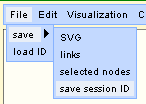
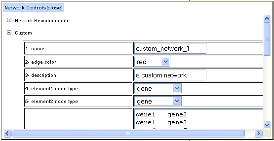
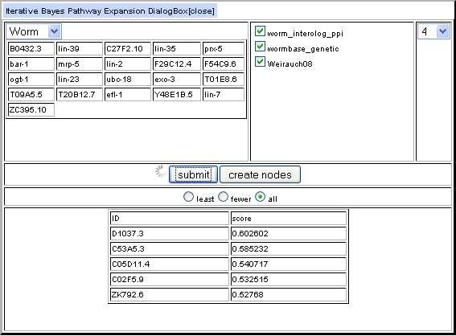
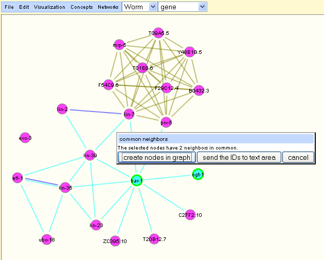
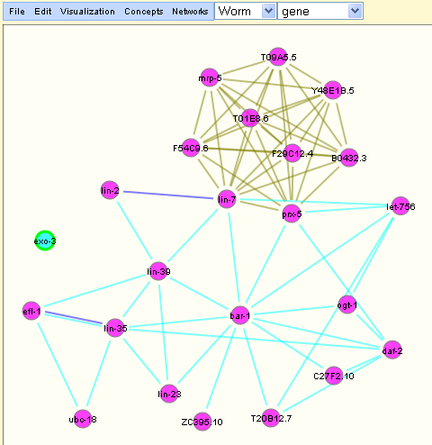
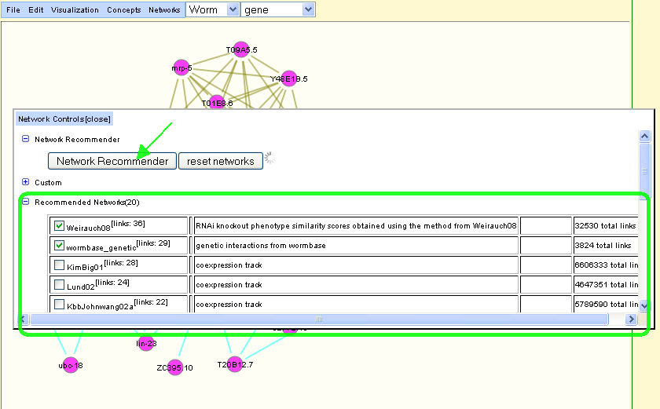
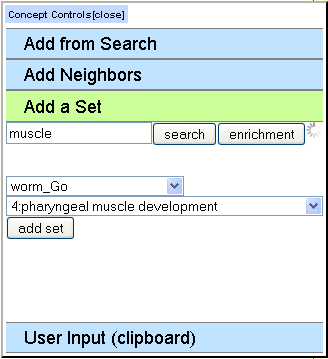
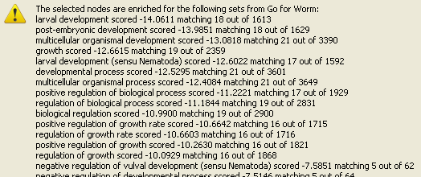

Additional Features
-
Save a graph. A graph can be saved by going to the menu bar -> File -> save -> save session ID. This will save the network graph in its current state on the Interaction Browser server. You can access the graph in a later session on the Interaction Browser by visiting the URL for the session or by submitting the ID number in the menu bar -> File -> load ID. This is a convenient way to share your network graph with other users.

-
A custom network. The user is able to create a custom network by entering network data in the fields provided in the `Custom' section of the network browsing controls (accessed by going to the menu bar -> Networks -> browse). Custom networks are semi-private in that they are only available during the same Interaction Browser session that they were created in.

-
Expanding the network. A selected set of entities may be used as a query set for the purpose of expanding the displayed network. Access the controls for this Iterative Bayesian Pathway Expansion by going to the menu bar -> Concepts -> expand -> Iterative Bayes. You should see a list of genes to be included in the query set. Also, there will be checkboxes for selecting networks for the pathway expansion. The Interaction Browser will attempt to find genes to be included in the query pathway by analysing the network neighborhood of each gene in the selected networks. After iterating over the specified number of times, the probability of candidate pathway genes will be reported. Since this process could be time-consuming (especially with large networks), it's best to start out with a small number of iterations before trying many iterations.

-
Find common neighbors of a selected query set of nodes by going to the menu bar -> Concepts -> common neighbors. With this feature, you can look for genes that are neighbors of all of the members of the selected query set of genes in the currently active networks. Here the selected genes, bar-1 and ogt-1, have 2 common neighbors from the active networks that can be added to the graph.

-
Unconnected nodes can be selected or removed by going to the menu bar -> Concepts -> unconnected. Selecting unconnected nodes causes entities with no neighbors in the currently displayed graph to be selected. Removing unconnected nodes causes them to be removed from the graph, and their IDs to be appended to the clipboard to be reviewed. In the example, exo-3 is not connected to any other gene in the displayed network.

-
The Interaction Browser can recommmend a network for a set of entities. The "network recommender" button is found in the network control tab below the custom network control. In order for the network recommender to work, at least two entities must be added to the network graph. When the network recommender button is clicked, the Interaction Browser uses the entities in the network graph as a query to search in all available networks on the Interaction Browser server. As there are many networks, this process may take some time. When it is done, a list of the most relevant networks for the query set of entities is returned. The list includes the number of relevant links. (Note that some of these links might be self-links, an edge that connects a node to itself. The IB currently does not visualize such edges.) Turn on networks from the recommender results by using the checkboxes.

-
Add a set of entities by using the "Sets" section from the menu bar -> Concepts -> browse.
-
The "Sets" control can search for a set of annotated entities. To begin, be sure the desired organism is selected from the listbox. This choice affects the databases that are available to search in. For example, GO, Kegg, and Proteome are available for worm. Next type in a string to use for the query. Finally, click search. The Interaction Browser will look for all entity sets which contain a match for the query string. In the example, the Interaction Browser looks for all GO sets in worm that have "muscle" in the name. The results are found in a listbox from which you can select sets by name and add its members to the network graph.

-
The "Sets" control can calculate set enrichment for a set of entities. A selected set of query entities is used to calculate the enrichment in a selected collection of sets. In the example, the GO sets for worm are queried. The reported results are the hypergeometric p-value for finding the number of matched entities given the size of the query set and the total size of the annotated set of entities. The top scoring set was "larval development".
